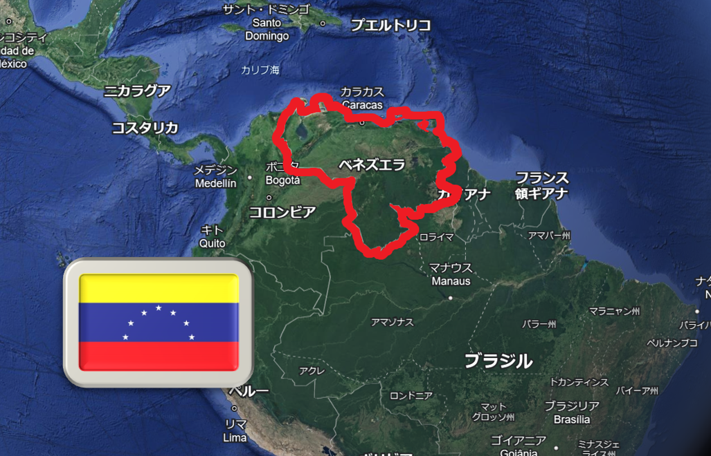
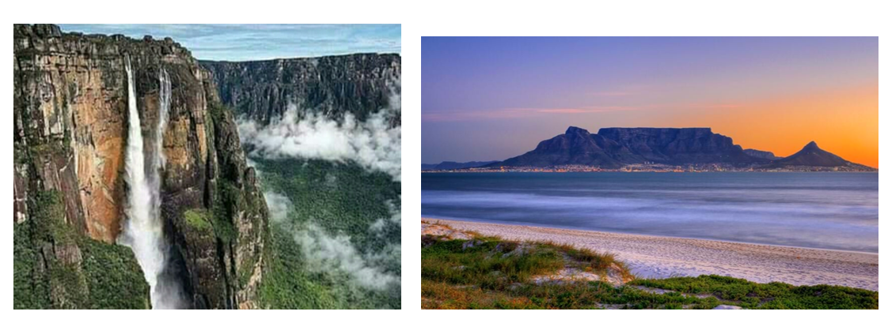
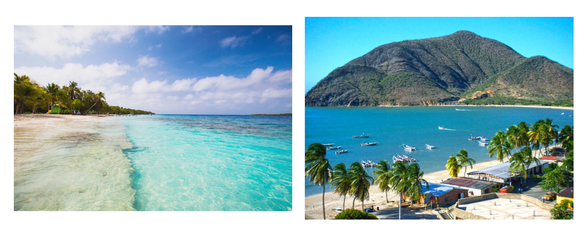
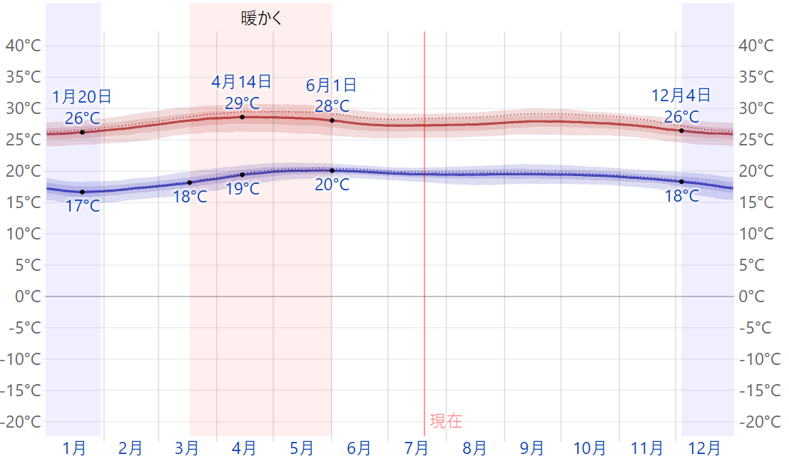
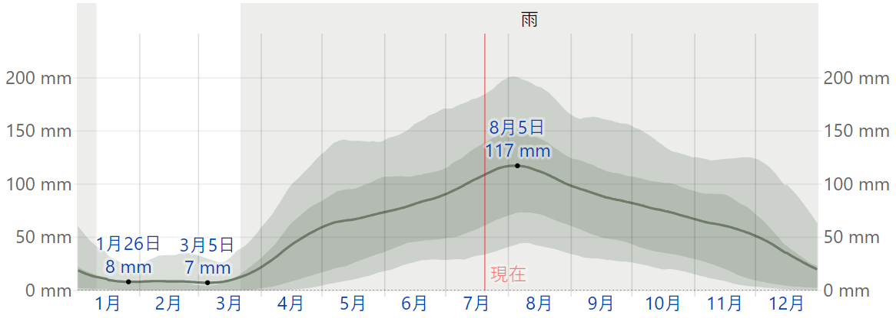
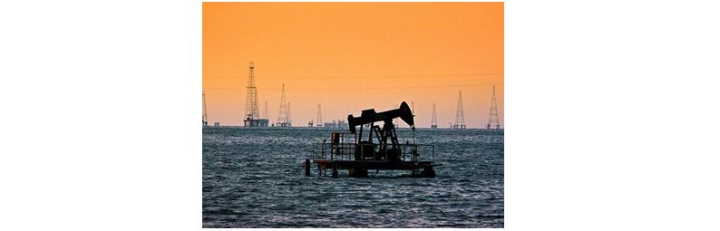
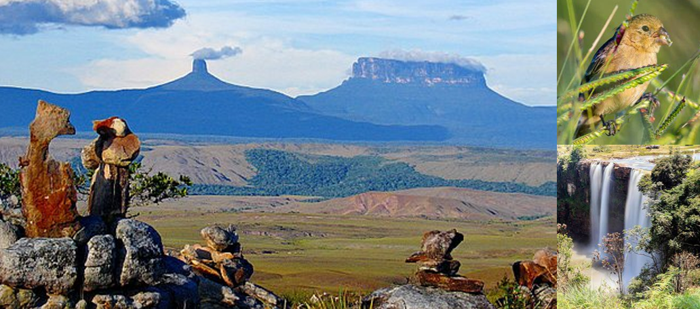
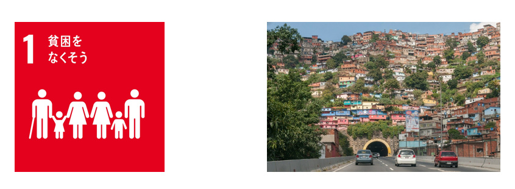

南アメリカ大陸北部に位置する。東にガイアナ、西にコロンビア、南はブラジルと接し、北はカリブ海と面する。首都はカラカス。
最古の岩石から成るテーブル状の山々のテーブルマウンテンや、世界最大の滝エンジェルフォール、海岸地帯にはたくさんの島々があり、透明度の高い透き通った海と白い砂のビーチには野生のウミガメや色鮮やかな熱帯魚がいる。
↑左:エンジェルフォール、右:テーブルマウンテン
↑左:ベネズエラのビーチ、右:マルガリータ島
気候は、全体的に熱帯性気候に属しており、サバナ気候の地域もある。熱帯の地域は年間を通じて、日中の最高気温は30度前後、最低気温は20度前後であるが、標高約1000mあたりから年平均気温が21度前後となる。
熱帯性気候の地域は雨季と乾季の区別がはっきりしており、12月から4月が夏で、5月から11月が冬となるが、首都カラカスのあるカリブ海側の地域はより乾燥している。
産油や鉱物資源により1980年代ごろまで南米でも最富裕国であったが、その後の原油価格の下落などで経済状況が徐々に悪化し、現在は多くの国民が貧困問題に陥っている。1900年代にマラカイボ湖で石油が発見されるまでは、ベネズエラはコーヒーとカカオを主としたプランテーション農業の国であった。
現在のベネズエラの経済は完全に石油に依存しており、輸出収入の96%が石油である。
徴兵制が敷かれているベネズエラの軍は、豊富な石油で得たオイルマネーを背景にロシアや中国などから武器を大量購入している。
アメリカもベネズエラにとって最大の貿易相手国である。
ベネズエラは、国土の40%が自然保護区域であり、野生動物や森林の生態が守られている。国内には43の国立公園と20の自然遺跡がある。ベネズエラ南東にあるカナイマ国立公園は、約3万㎢以上の広さで、2000mを超えるテーブルマウンテンでおおわれており、固有種も多く生息し、世界最大の落差があるエンジェルフォールがある。
ベネズエラは、外国による、極度の貧困に苦しむ人々を支援するプロジェクトが行われており、自立支援の仕組みづくりや、難民問題への対応などが含まれている。ベネズエラ自身が取り組んでいる項目はわからなかった。
